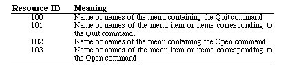

|
|
This Technical Note describes several new features found in MultiFinder 6.0 and
answers a few more commonly-asked questions.
[Aug 01 1988]
|
How Can I Tell If MultiFinder is Present?
Once again, you cannot. Previous Technical Notes discuss how to check for the
new services available with MultiFinder (i.e., _WaitNextEvent and the
temporary memory allocation calls).
Currently, since an application cannot tell if MultiFinder is present, the
application also cannot know how a sublaunch will behave (see M.PS.SubLaunching).
Unfortunately, the two possible sublaunch behaviors are radically different;
with MultiFinder the _Launch trap returns to the application and
without MultiFinder it does not. For most applications, however, these
differences in sublaunch behavior should not matter. Hopefully, the
_Launch trap will be improved in a future
System Software release.
Back to top
_WaitNextEvent is Always Available
In System 6.0 and later, _WaitNextEvent is present whether or not
MultiFinder is present. Calling _WaitNextEvent without MultiFinder installed
is virtually identical to calling it with MultiFinder installed. Your application
can still "sleep" for a specified time and be notified if the cursor location
is outside a specified region. The only difference when MultiFinder is not
installed, is that your application is not suspended or resumed. If your
application requires System 6.0 or later, DTS recommends calling
_WaitNextEvent instead of _GetNextEvent in
your main event loop.
Back to top
_MFTopMem
The Programmer's Guide to MultiFinder incorrectly documents
_MFTopMem on page E-1. It does not return a pointer to the top of your application's memory
partition as it is documented. It does, however, return a pointer to the top of the addressable
RAM space in the machine, and is documented correctly on page 3-15 of the manual. Note that
earlier releases of this manual referred to this call as _MFMemTop.
Back to top
MFTempHandles Are Not Handles
The MultiFinder temporary memory allocation call, _MFTempNewHandle,
currently does not return a "true" Handle in the sense that it can be
used interchangeably with a Handle obtained from a call to _NewHandle.
Specifically, you cannot pass a Handle obtained from a call to _MFTempNewHandle
to any Memory Manager routine or Toolbox routine which, in turn, passes it to the
Memory Manager (either directly or indirectly). Like a true Handle,
however, you can still dereference a Handle obtained from
_MFTempNewHandle. You should treat a Handle
from _MFTempNewHandle in the same way you would a
fake Handle (i.e., a Handle not obtained
from the Memory Manager--see M.OV.CompatibilityWhy).
This restriction on the use of MultiFinder
temporary memory may not apply in future
System Software releases.
Back to top
Mouse-Moved Event Confusion
There has been some confusion over the mouseRgn parameter to
_WaitNextEvent, and under what circumstances it returns a mouse-moved
event. Most of the confusion is caused by the word "moved." Many applications
have assumed that mouse-moved events are generated only when the mouse actually
leaves the mouse region. In System 6.0 and later, _WaitNextEvent
returns a mouse-moved event whenever the cursor is outside the mouse region.
Thus, when an application receives a mouse-moved event, it should compute a new
mouse region based upon the new cursor location before calling
_WaitNextEvent again, otherwise _WaitNextEvent continues to
return mouse-moved events until the user moves the cursor back inside the mouse
region or until a new mouse region is specified.
Back to top
New MultiFinder Features
Open Document and Quit
In System 6.0 and later, MultiFinder adds the ability to open application
documents from the Finder when the owner application is already open. For the
moment, MultiFinder accomplishes this by simulating a mouse-down event in the
application's menu item for opening files. The application usually responds by
calling _SFGetFile, which MultiFinder short circuits into returning
the document opened in the Finder layer. This is similar to the way that
MultiFinder triggers applications to quit when the user selects Shut Down or
Restart from the Finder's Special menu.
In future System Software releases, this mechanism will probably change to a
more straightforward method of notifying the application that it needs to open
a document or to quit.
How does MultiFinder find the Open item? By default, MultiFinder looks for a
File menu with an item named Open..., Open ..., Open..., etc. Of course, some
applications do not have a File menu or they name their Open item something
different (i.e., Open Document). To compensate for this difference,
MultiFinder first looks in the application's resource fork for
'mstr' or 'mst#' resources in the range of 100-103. An
'mstr' resource has the same format as an 'STR ' resource (a
Pascal string) and contains the name of the menu or menu item for which
MultiFinder should look. An 'mst#' resource has the same format as an
'STR#' resource (a list of Pascal strings) and contains a set of names
for the menu or menu item for which MultiFinder should look. MultiFinder uses
this same mechanism to locate the application's Quit command. Table 1
documents these resource IDs and their meanings.

Table 1. Resource IDs and Meanings
As always, be careful to avoid any "clever" tricks that rely upon this
information; MultiFinder will not always work this way.
Additions to the 'SIZE' Resource
The 'SIZE' resource has four new flags (onlyBackground,
getFrontClicks, acceptChildDiedEvents, and is32BitCompatible)
which communicate information about an application to MultiFinder. Figure 1 illustrates
the locations of these new flags. Setting both the onlyBackground flag and
the canBackground flag informs MultiFinder that an application is a
"faceless background task," that is, it has no user interface (i.e., no
windows and no ports) and should only be run in the background.
An example of a faceless background task is the
System Software application Backgrounder.
Figure 1. 'SIZE' Resource Flag Bits
An application can set the getFrontClicks flag if it wants to receive
the mouse-up and mouse-down events when the user brings the application's layer
to the front. Typically, the user merely wants to bring an application to the
front, so it may not be desirable to move the insertion point or start drawing
immediately after coming to the foreground. If getFrontClicks is set,
the mouse click is passed to the application. If getFrontClicks is
set and a click is made in the content region of the background application's
frontmost window, then the application receives a click in the content region
of that window.
Clicking on a window that is behind another window within the same layer causes
the usual event processing (i.e., the mouse-down event is visible to the application),
for which the application calls _SelectWindow, to bring the window forward.
This is true whether or not the bit is set. Ordinarily, these events are not
passed to the application, so setting the getFrontClicks flag is
usually not appropriate. The Finder, however, is one example of an
application which has the getFrontClicks flag set.
The acceptChildDiedEvents flag is used by SADE to get notification
when an application it launched quits or crashes. A childDiedEvent is
another MultiFinder app4Evt with a message field of the event record
which Figure 2 illustrates.
Figure 2. Message Field of childDiedEvent
|
Note:
Your application does not receive childDiedEvent events
unless the user is running MultiFinder 6.1b7 (shipped with SADE 1.0) or 6.1b9.
The MultiFinder which comes with System 6.0.x (and earlier) does not send these events. Your application
should not depend on these events for its operation--they are documented for debugger use only.
In addition, developers may not distribute MultiFinder 6.1bx to customers, even if
licensed to distribute Apple's Macintosh System Software.
|
The Status parameter in the message field is a system error code if
the application crashed or zero if it quit normally. The where field
of the event record contains the process identifier (pid) of the quitting
process. The _Launch trap returns the pid of the newly created
application in D0 if the call to _Launch succeeds (if
D0 is negative, it contains an OS error code).
|
Note:
Future versions of System Software may operate only in 32-bit mode
on machines with 68020 or newer CPUs, and applications which are not 32-bit
clean will not function correctly on these machines.
|
The is32BitCompatible bit will be used in future systems to warn users
that running an application which does not have the bit set may crash their system, if it
is running in 32-bit mode. Developers should not set this bit unless they have
thoroughly tested their applications on a 32-bit system. Currently, the only 32-bit
system available for testing is A/UX, so running under A/UX should be considered the
"litmus test" for 32-bit compatibility until newer System Software is available.
Note, however, that the is32BitCompatible bit does not have to
be set to run an application under the current version of A/UX.
Back to top References
Programmer's Guide to MultiFinder
MultiFinder Development Package
M.OV.CompatibilityWhy
M.TB.MultiFinder
M.TB.MultiFinder1Bug
M.TB.MultiFinderMisc
M.OV.32BitClean
Back to top
Downloadables
|

|
Acrobat version of this Note (140K).
|
Download
|
|